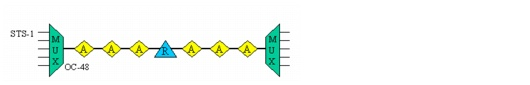
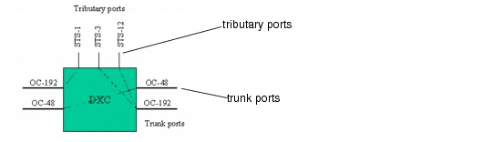
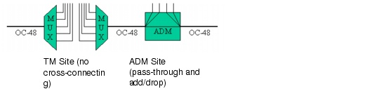
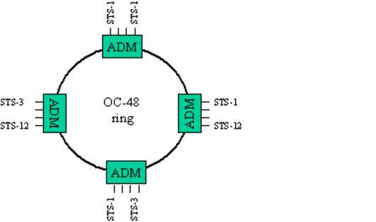

Concepts and Models > SONET/SDH and Optical Technology > SONET/SDH Systems
SONET/SDH Systems
SONET is a standardized TDM protocol that allows individual low-bit-rate tributary signals to be multiplexed directly into higher-bit-rate SONET signals. In addition, SONET has built-in overhead, which is restricted to about five percent of the total signal capacity; this overhead provides capabilities for advanced network management, maintenance, and fault recovery.
The information structure used to transmit SONET signals is called the Synchronous Transport Signal (STS). An STS consists of payload and overhead information fields, and is organized in a block frame structure that repeats every 125 microseconds. The basic STS frame is STS-1, with a bit rate of 51.84 Mbps. STS-1 signals can be multiplexed into higher-level STS-N signals, where N is an integer (typically a multiple of 3 or 4). The optical interface for transporting STS-N signals over optical fiber is called the Optical Carrier Level N (OC-N).
SDH uses a similar signal called the Synchronous Transport Module (STM). The basic STM frame is STM-1, with a bit rate of 155.52 Mbps. STM-1 signals can be multiplexed into STM-N signals, where N is typically a multiple of four. The SDH STM-1 signal has the same bit rate as the SONET STS-3 signal.
The STS-1 payload (called SPE, for Synchronous Payload Envelope) can vary, depending on the type of data in the frame. If one DS-3 is being mapped to the frame, it is placed directly into the SPE. But if sub-DS-3 services are being transmitted, a new container must be defined. This new container is called the VT (virtual tributary). VT-rate circuits are part of the lower order path (LOP) layer of SONET.
VTs are defined for four types of service, corresponding with the PDH signals they support: DS-1 (VT-1.5), E1 (VT-2), DS-1c (VT-3) and DS-2 (VT-6). Each type carries a different bandwidth and therefore occupies a different amount of space within the payload. VT-1.5 occupies 9 bytes x 3 bytes (three columns), VT-2 is four columns, VT-3 is six columns, and VT-6 is 12 columns. To solve the problem of mixing and matching VTs within a payload, SONET defines a VTG (VT group): one STS-1 frame has seven VTGs, and each VTG occupies 12 columns of the payload. VTs are matched and placed into a VTG that contains identical services. A single VTG can contain four VT-1.5s, three VT-2s, two VT-3s or one VT-6.
SDH uses a similar type of lower-order container called the VC (virtual container). VCs are defined for five types of service: DS-1 (VC-11), E1 (VC-12), DS-2 (VC-2) and E-3 (VC-3) and E-4 (VC-4). The VC-11, VC-12 and VC-2 containers are mapped into a TUG (tributary unit group), similar to the VTG in SONET. Seven TUGs fit into a VC-3. An STM-1 frame can host 3 VC-3s or a VC-4.
Table 2-1 lists the VT signals and matching VC signals modeled in SP Guru Transport Planner.
Table 2-2 lists the STS rates and the corresponding STM rates modeled in SP Guru Transport Planner.
The standardized set of STS/STM and VT/VC signals were devised to fit the traditional voice-based PDH signals. However, as today's networks are increasingly relying on data services, SONET/SDH has been extended with the principle of virtual concatenation of signals. Virtual concatenation defines an inverse multiplexing procedure that groups multiple signals and transports them as one entity across the network. The concatenated signals are obtained by grouping the payloads of the constituent signals. Both STS/STM and VT/VC support virtual concatenation: for example, an STS-1-21vc signal can be defined that groups the payload of 21 STS-1 containers (combined payload of 21 x 50.112 Mb/s = 1.052 Gb/s) to efficiently transport 1 Gigabit Ethernet services over SONET.
In its basic form, a SONET link consists of an optical fiber with terminal multiplexers at the endpoints, and amplifiers and regenerators between the endpoints. The terminal multiplexers combine STM-N signals in a higher-rate STM-M signal (M > N). At regular intervals along the fiber, optical amplifiers boost signals that have propagation losses in the fiber. To ensure correct transmission, regenerators must clean up the signal at intermediate points due to non-linear degradations in the fiber (a process called 3R regeneration). This process reamplifies, reshapes, and retimes the signal at the electrical level, not the optical level.
Figure 2-1 SONET Link

Nodes in the network use digital cross-connects (DXCs) to transport SONET signals efficiently throughout the network. A DXC typically terminates several SONET links on its trunk ports; it can also add or drop local traffic through its tributary ports. Thus a DXC can transfer cross-connect traffic between two SONET links (transit traffic); a DXC can also add/drop tributary traffic from a SONET link (local traffic).
Figure 2-2 DXC

If cross-connection is not required, you can substitute a DXC with an add/drop multiplexer (ADM) or a SONET/SDH terminal multiplexer (TM) at locations with a lower nodal degree. An ADM can add/drop traffic in the location; it can also pass express traffic. ADMs are also used in the nodes of SONET/SDH rings. A terminal multiplexer aggregates the tributary traffic to the bit rate of its trunk, and has no transit capabilities.
Figure 2-3 Terminal Multiplexer and ADM

You can construct three types of networks in SP Guru Transport Planner:
Note—UPSR and BLSR are North American terminology for SONET networks. In European terminology for SDH networks, the UPSR is known as a Sub-Network Connection Protection (SNCP) ring and the BLSR is known as a Multiplex Section Shared Protection Ring (MS-SPRing).
Figure 2-4 Ring Network: Example

The UPSR and 2F-BLSR are supported by one underlying fiber pair or one wavelength pair if the ring is supported by a (D)WDM system. The 4F-BLSR is supported by two underlying fiber pairs or two wavelength pairs. On a UPSR ring, a connection is always routed using a working path along one side of the ring and a protection path along the opposite side of the ring. On a BLSR, in contrast, half of the ring capacity is reserved up front for protection purposes while traffic is routed in the remaining capacity (with no explicit protection path).
For more information, see Protection Methods in Ring Networks.
| Home © 1987-2007 OPNET Technologies, Inc. All Rights Reserved. This software may be covered by one or more U.S. Patents. See complete patent notice in the Legal Notices section. OPNET Support Center |